念願だった萬福寺の
普度勝会（ふどしょうえ）に行ってきたよ。
普度勝会とは中国盆とも呼ばれ、華僑の人々が故人を供養するために執り行う施餓鬼行事だ。
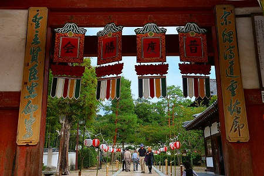
何故、中国の盆行事が京都宇治で行われるか？
このお寺は江戸時代に開かれた明の仏教様式のお寺だからなのだ。
詳しくは
以前訪れた際のレポートを御覧いただきたし。
洛南でも有数の名刹、萬福寺。
菱型の敷石が続く道を歩いていくと…
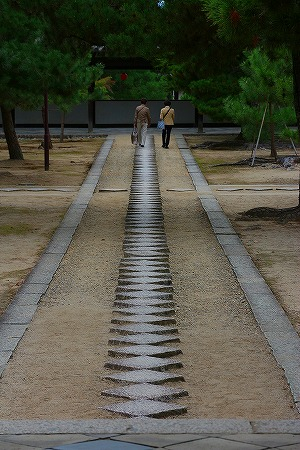
山門が現れる。
山門前には普度勝会の提灯も下がっていて賑やかだ。
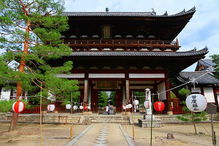
山門を潜ると天王殿。
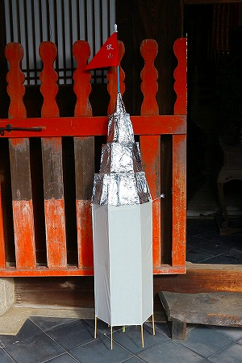 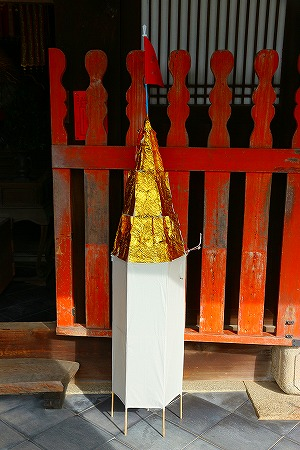
入り口には金と銀のタワー状の飾りが。
これは
金山銀山といって金銀の財宝を象徴するオブジェだ。
日本国内において普度勝会といえば長崎や神戸の中華街が有名だが、例えば長崎の普度勝会の場合、この金山銀山が大量に飾られる。
中国の伝統的な死生観は道教に由来するところが多く、日本もその影響を多く受けているのだが、決定的に違うのはこの
あの世での経済観念だと思う。
日本では三途の川の渡り賃として六文銭だけを持ってあの世に旅立つのだが、中国および華僑の人々の考えるあの世は驚くほどリアルだ。
以前も報告したが、お金はもちろん
生活に必要なモノは全てあの世に持っていく。
よく日本では「あの世にお金は持って行けないし…」と言うが、中国ではさにあらず。
焚き上げることであの世専用マネーをじゃんじゃん送金したり、嗜好品をバンバン届けたり…そりゃあ大変なんすから。
天王殿の弥勒菩薩もその勢いに苦笑いですよ。
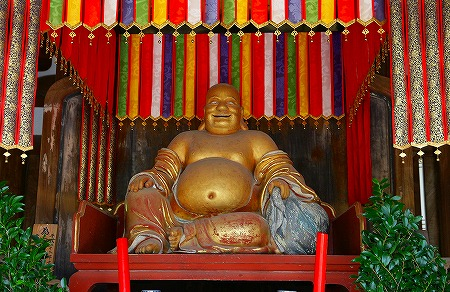
で、天王殿を抜けるとその先には本堂である大雄宝殿があるのだが…
普度勝会のイベントの一環として太極拳の演舞が奉納されていた。
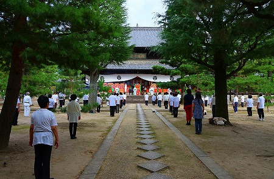
奉納、といっても本チャンなのは階段上にいる師範代だけで他は生徒さん。
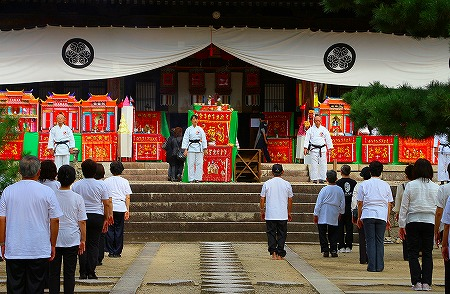
どっちかというと中国の朝の公園で行われているみたいなのんびりとした雰囲気だった。
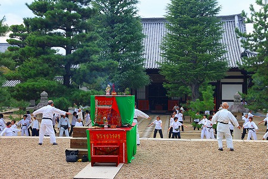
で、いよいよ普度勝会の目玉のお出ましである。
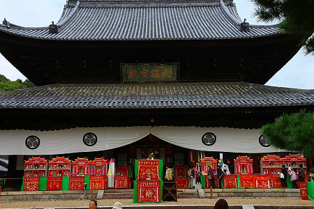
大雄宝殿の前にずらりと並んでいるのは
死者を供養するための紙製の建物である。
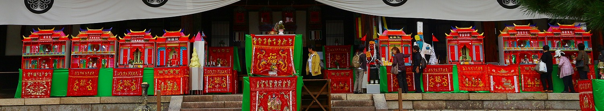
一つ一つ意味あいは違うが、冥府と呼んでいるみたい。
どれもキッツい赤をベースに作られていて
目がチカチカしてきます…。
これらの建物はこの普度勝会の3日目である最終日に
全部燃やされて天上の御先祖様に届く仕組みとなっている、とか。嗚呼勿体ない…。
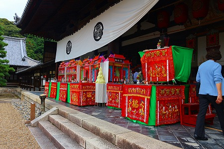
台にかかっている刺繍が施された布は燃やさない、と思う。
それでは細かく見ていくとしよう。
左サイド、中央の祭壇に面したところには
城隍廟がある。
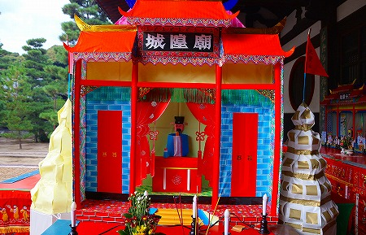
これは都市の守護神であると同時に死後の世界を司る城隍神を祀ってある。
（台湾の城隍廟は
こんな感じでした）
城隍廟の中には青い法衣を着た城隍神が鎮座していた。
で、正面に回り込んでみるとこれまた派手な冥府が並ぶ。
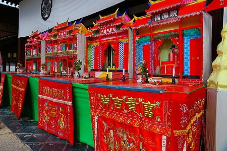
それらの建物の中でもひときわ目を惹くのが左の2つ。
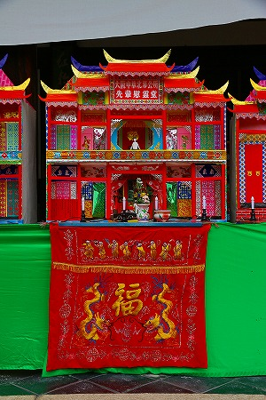
神仏が祀られている冥府とは違い、2階建てで何やらにぎやかだ。
これは故人があの世で豪勢に暮らせるように、との願いを込めて奉納する死者のための住宅で、
冥宅という。
つまりあの世でのリッチな生活を遺族がこの世からサポートするのだ。
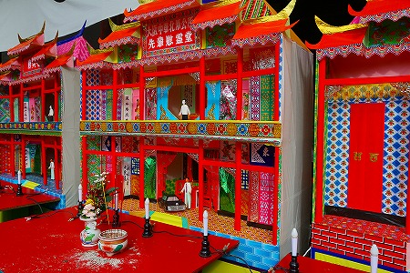
大阪中華北?公所先輩慰霊堂とある。
公所とは華僑の出身地別コミュニティである。日本で言えば県人会のようなものだろうか。
そういった同郷の先輩を供養する冥宅、ということになろう。
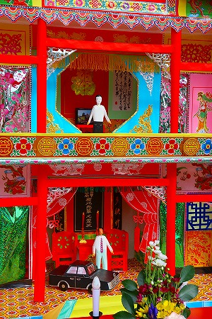 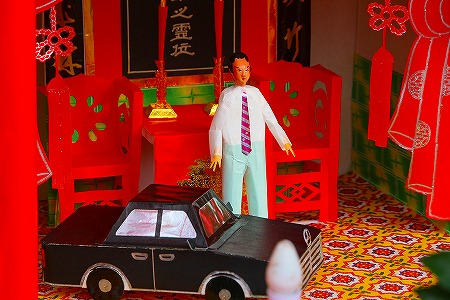
2階建ての立派なお屋敷である。
1階には黒塗りの乗用車がある。もちろんこれもあの世で乗り回しちゃってください、の奉納である。
あ、ベンツなんだ…。
伝統的で装飾的な中国風住宅だが、車やテレビといった
現代的なエレメントも取り込まれているところがこの習俗のミソだ。
昔の習慣をなぞっているだけでなく、今の時代に合わせてアクティブに変化し続けている。
言い換えれば
生きている習俗、ということになろう。
こちらは「 府冥宅」とある。
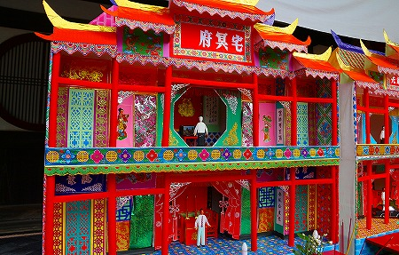
「府」の前に一文字分空いているように見えるが、その理由は追々。
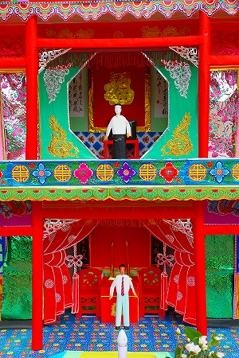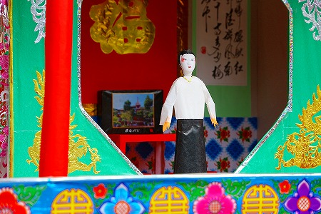
こちらも
豪華な2階建て。というかお隣さんとまったく同じ造り。
ただしこの冥宅には黒塗りのベンツはなかったけど。
お、テレビに
ＳＯＮＹって書いてある。
それにしても細かくつくってあるなあ。コレを燃やしちゃうなんて、ホント勿体ない…などと言っているうちはこの習俗の真剣さが理解できてない、ということなんだろうな。
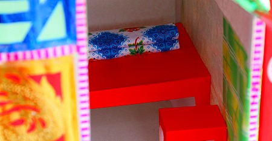
中にはちゃんと寝台までありました。
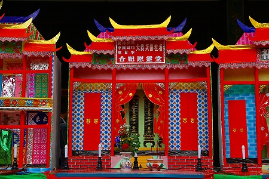
冥宅の隣には、「阪神淡路 中国四川 東日本 大震災犠牲者 合祀慰霊堂」というお堂があった。
で、今度は右サイド。こちらにも4つの建物が並んでいる。
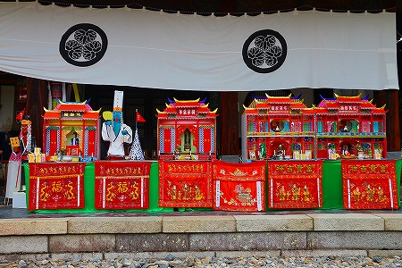
まず右サイドの左から。
素敵なお方が左右を固めてます。
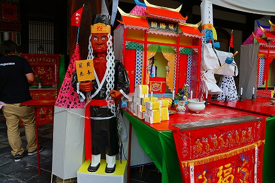
額には
陰陽司とある。これも世の陰と陽、つまり生と死を司るカミサマ、ということだ。
先ほどの城隍神の補佐的な存在だったかな、確か。
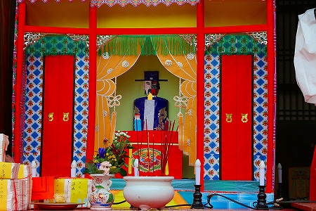
陰陽司も死者の裁きをする
陰陽だけにお顔もキカイダー系。
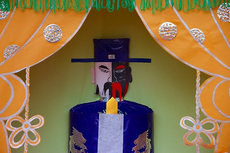
しかも帽子がシルクハットっぽくて不思議さ倍増。
それにつけても気になるのは左右のユニークすぎるお二人。
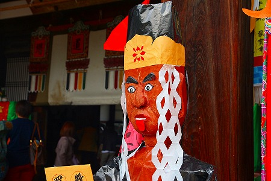 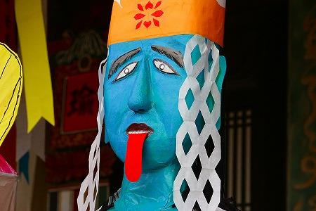
黒い方が
范将軍、青い方が
謝将軍。
いずれも陰陽司のアシスタント的ポジション。
これらのカミサマは台湾の城隍廟でも見たことがあったが、張りぼての人形になると途端に深刻さが消し飛んで、後には
ユニークなペーソスだけが抽出されることになる。
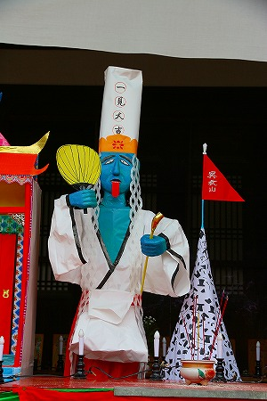
考えてみれば私がこのような張り子のカミサマやコンクリ仏に異様な執着を示すのもその辺に理由があるような気がする。
本来であれば畏れ敬う対象である神仏を紙やコンクリートという
「自由だけど不自由な素材」で作ることによってその威厳とか神聖さのような部分がキレイさっぱりそぎ落とされる。
結果、残ったのは
剥き出しの信仰の本質のようなものだけ。その潔さに惹かれているようだ。
だから最近はコンクリ仏にしても紙の張りぼてカミサマにしても何を表しているのかさえ判別できれば造形上の技術はそれほど上手くなくてもいいのではないか、と思うようになった。
いや、
上手くない方が良いのではないか、とすら思ってしまうんだな。へそ曲がりですいやせんね。
さてさて、冥宅ウオッチングである。
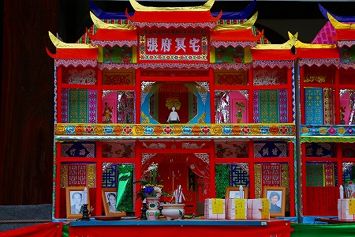
張さんの冥宅ということなのだろう。
で、こちらは楊さんの冥宅。
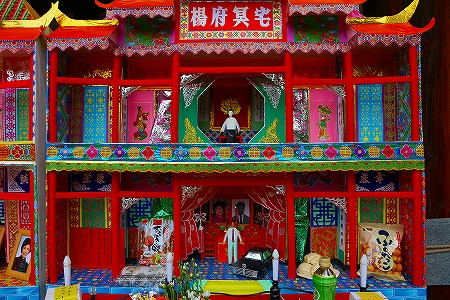
結局、4軒の冥宅は全て同じ作りであった。
ただ、供え物の量や付属品で見栄えは随分違ってくる。
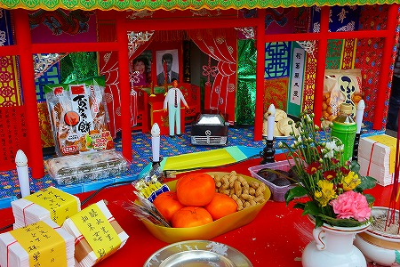
花や供物だけでなく遺影なども添えられている。
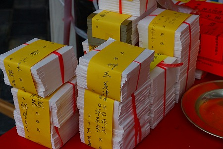
紙の束は
あの世で使うマネーだろうか。
冥宅の傍らにはなんと契約書も掲げられている。
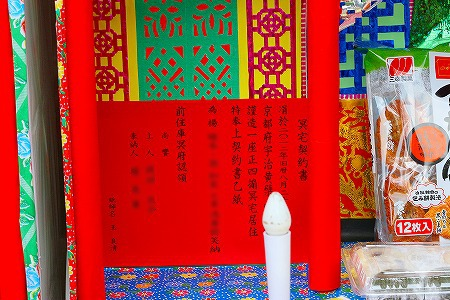
そこまでリアリズムに徹しなくても…と思うが、死生観なんて国や民族、地域が変わればころっと変わるわけで、それぞれを尊重したいものだ。
そういえば先ほどの名前の入ってなかった冥宅にだけ契約書がなかった。やはり作ったものの奉納する人が現れなかったのだろうか。
もちろんこちらも負けじとベンツ。
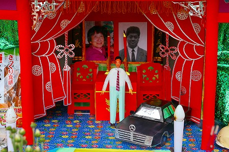
そしてテレビはソニー。
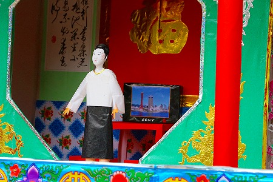
ずらりと並んだ
あの世のビバリーヒルズの眺めは壮観ですらある。
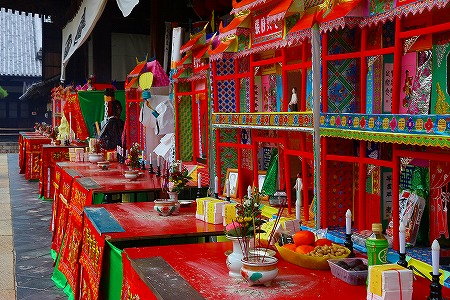
あの世にいったらこんな家がズラ〜っと並びベンツが走り回っているんだろうか…
草葉の陰で安らかに眠る、といった日本人が一般的にイメージしている死後の世界とはまるで違った
派手できらびやかで煩悩全快の冥界。
でもそれはそれで結構楽しそうじゃないか。
というわけでカラフルでハッピーなチャイニーズスタイルのあの世を堪能してきた。
ところが。
その後ろに回ると一転して
地獄の世界が展開されているのだ。
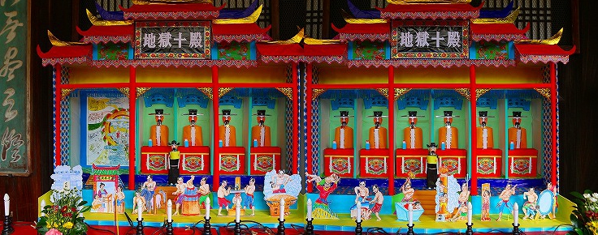
地獄十殿には死後の裁きを行う十人の裁判官、十王が並んでいる。
これらも先ほどの范将軍、謝将軍同様、恐ろしいシーンなのだが、何故か
ほんわかムードが漂ってます。
そしてその十王の前には…お待たせいたしました！
地獄の光景が展開されているのですよ！
例えば臼で挽かれたり…
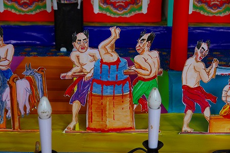
鋸で挽かれたり…
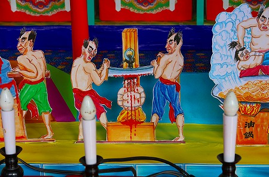
鍋で茹でられたり…しかも油鍋って…
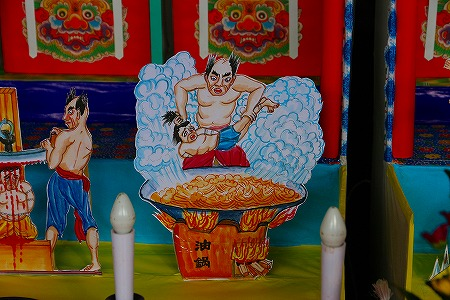
ただ、こちらも十王に合わせた訳ではないのだろうが、ほんわかした絵柄であまり恐くない。
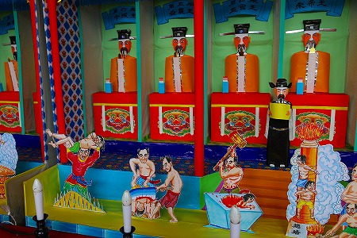
画力の問題もさることながら、死者供養の施餓鬼であんまりどぎついシーンもどうかなー、という判断が働いているような気がする。
それでもわざわざ地獄のシーンを入れて来るところを見ると、やっぱりお好きなんですねえ、地獄。
大雄宝殿の前には民間信仰の神々の名などが書かれた位牌のようなものが並んでいた。
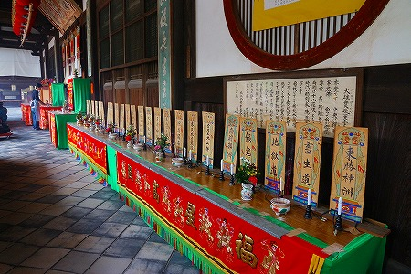
大勢の人が次から次へとお参りに来る。
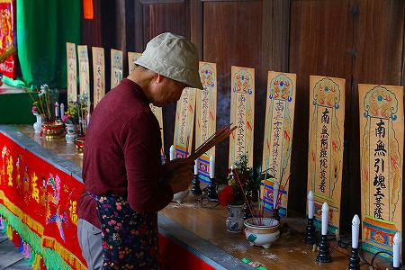
中央の祭壇に供えられたあの世限定マネー。
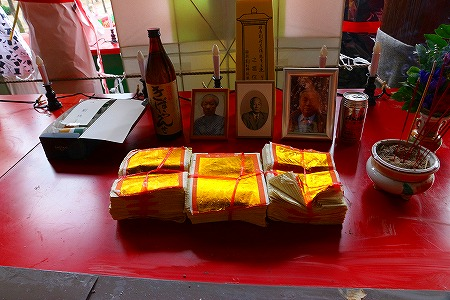
こちらのマネーは何故かエンボス仕様になっていた。燃えやすくするための工夫なのかな？
それにしても台に掛けられた刺繍がイイ感じ。
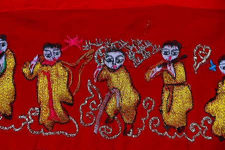
大雄宝殿の中に入ると
普段見かけない神像がいた。
牙の生えた馬のような動物に乗った河童みたいなカミサマ。
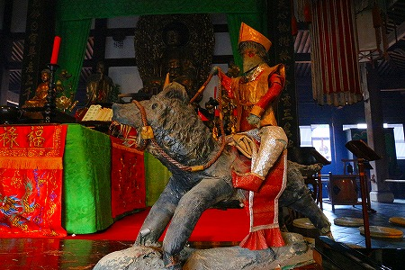
旗を持ったカミサマ。
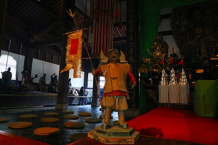 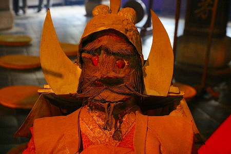
いずれも毎年燃やされちゃう感じではなかった。
それにしても異形の神だ。つか恐いし。
大雄宝殿の隅には馬に乗った神様とジャンク船に乗った仏様が飾ってあった。
いずれも移動するツール、ということで彼岸と此岸の行き来を強く連想させるが、日本の伝統的な盆行事でもこの馬と船は重要なアイテムとしてしばしば登場する。
盆に先祖が帰ってくるのは馬に乗ってくるといわれるし、お盆に西方丸という供物を乗せた船を海に流す地方もある。
色や印象は随分違うが、
細かいエレメントとかベースは良く似ているんだなー、と改めて実感した。
萬福寺名物、魚の開?。コレを叩いて時を知らせるのだそうな。
参照；
萬福寺のホームページ（普度勝会の説明もありました）